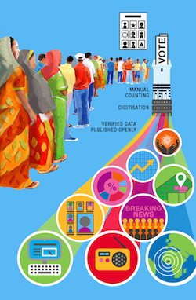

Case study: Burkina Faso’s open elections
- Executive summary
- Background: the political context in Burkina Faso
- Planning Burkina Faso’s democratic election: the challenges
- Planning Burkina Faso’s democratic election: the solutions
- Building trust in the electoral process
- Securing political buy-in for the rapid publication of verified election results
- Building technical capacity for an expanded results transmission system
- Delivering real-time results: the Burkina Open Data Initiative’s Open Elections project
- Enabling independent verification of results: CODEL and the situation room strategy
- Ensuring widespread dissemination of results: engaging the media
- Election Day and the results count: delivering real-time results with the satellite transmission system
- Conclusion
Executive summary
 On 29 November 2015, Burkina Faso held its first truly free, open and transparent democratic presidential election. The election marked the end of a political transitional period, restoring democratic order and providing the country with legitimate authorities.
Planning and delivering free and fair democratic elections in Burkina Faso raised numerous challenges for the Commission Électorale Nationale Indépendante (CENI), Burkina Faso’s electoral commission. The main challenges were to build trust in the election and to prevent a prolonged period of uncertainty about the results.
In overcoming these challenges, the CENI worked to secure political buy-in for the rapid processing and publication of verified election results. They committed to a turnaround time that would be unprecedented in Burkina Faso, and almost unheard of in sub-Saharan Africa: just one day.
Through a carefully constructed results transmission system and web application, along with media sources that had been briefed in advance, results information was made accessible to citizens and interested parties the world over. The winner of the election was announced a little over 24 hours after the polls closed, and the result was accepted by the losing candidates.
Achieving CENI’s ambitious goal required input from many different types of actors – government, civil society and international – and close collaboration between them.
This case study captures the experience of those involved, namely the Burkina Open Data Initiative (BODI), the Commission Électorale Nationale Indépendante (CENI), the International Foundation for Electoral Systems (IFES), the Convention des Organisations de la Société Civile pour l’Observation Domestique des Élections (CODEL), the Open Data Institute, and the media who helped to disseminate results.
Whether or not the improved information flow and accessibility to results – enabled by the application of open data – led to increased trust in the election process, or even an improved process, is not something that we can or indeed set out to prove or show empirically, although the outcome of this case study is certainly supportive of that conclusion.
What we can take away from this case study, however, is the potential for open data technologies, tools and skills to help improve information flows to citizens during a critical period of political transition.
Background: the political context in Burkina Faso
In 2015, Burkina Faso ranked 183rd of 188 countries in the Human Development Index, and just under half of its population live on less than US$1.25 per day. Over the past decade, Burkina Faso has scored relatively low in its political rights standards in indexes such as Freedom House’s Freedom in the World, in which its aggregate scores averaged at 17.4 out of 40 between 2003 and 2013.
The political situation in Burkina Faso has been varied since it gained independence. Following a coup in 1987, President Blaise Compaoré took leadership and held this position for 27 years, until 2014. Burkina Faso held its first post-coup presidential elections in 1991, when a new constitution was approved. In this election Compaoré was alone on the ballot and voter turnout was about 25%. In Burkina Faso’s first multiparty parliamentary elections, held in 1992, Compaoré’s party, Organisation pour la Démocratie Populaire/Mouvement du Travail (ODP/MT), won with a two-thirds majority against weak opposition. Renamed the Congrès pour la démocratie et le progrès (CDP) – following a merger of political parties including ODP/MT in 1996 – the party won again in 1997. This was case for the next three presidential elections in 2000, 2005 and 2010, when Compaoré secured his fourth term.
In 2012, following the establishment of a new electoral commission – Commission Électorale Nationale Indépendante (CENI) – Burkina Faso held parliamentary elections. For these elections, the CENI decided to transfer election results data digitally from 45 Electoral District Offices to the CENI headquarters in Ouagadougou, using a satellite results transmission system. This enabled it to declare the results within a week of the vote, and reduce the threat of contested results and civil unrest.
In the run-up to the 2015 elections, Compaoré’s supporters campaigned to change the constitution so that he could run for a fifth term. This was met with widespread protests, with demonstrations in the major cities on 28 October 2014. A few days afterwards, Compaoré resigned and fled. Following two weeks of military control, a transitional charter was signed in early November and elections were promised within 12 months.
The transitional period remained fragile, with an unsuccessful coup taking place in September 2015, led by the Regiment of Presidential Security – Régiment de la sécurité présidentielle (RSP) – during which presidential candidate Michel Kafando and others were detained. Within a week of the coup attempt, Burkina Faso’s interim government had been reinstalled, and by 30 September the RSP had been disarmed. Elections scheduled for October were postponed to 29 November.
Compaoré’s resignation set the scene for the build-up to what would be deemed the country’s first truly free, open and transparent democratic election. This would be the first time in nearly 25 years that Compaoré would not be a candidate, signalling the beginning of a new political era. The election would mark the end of the transitional period, restoring a democratic order and providing Burkina Faso with authorities with a strong democratic mandate.
For the 2015 elections, it was crucial for the CENI to gain the trust of voters and politicians who had been doubtful of the credibility of results during previous elections. Some of the main challenges and solutions in achieving this are explained in the following sections, with a focus on the decision to ensure the period of uncertainty between votes being cast and the results being officially announced by the CENI was reduced to a minimum.
The political importance of these elections was significant. As Halidou Ouedraogo, President of the body of civil society organisations who observed the elections, Convention des Organisations de la Société Civile pour l’Observation Domestique des Elections (CODEL), reflects:
The transitional government could not have been kept for long, as it would have had a detrimental effect on the country’s social and economic situation. The elections had to be organised in a transparent and credible way to elect a democratic President and bring the country back into a stable and democratic state.
Planning Burkina Faso’s democratic election: the challenges
Planning and delivering free and fair democratic elections in Burkina Faso raised numerous challenges, given the political context. Among the major challenges were building trust in the election and preventing a prolonged period of uncertainty about the results.
Building trust in the electoral process
The lack of fully democratic and transparent elections in Burkina Faso over the past several decades had left many Burkinabe citizens doubtful of the promise of any that would be truly free and fair. Trust is vital for every part of an election process to work – from citizens turning out to vote through to the acceptance of results by unsuccessful candidates and their supporters. In particular, trust helps to limit the risk of election violence. The CENI’s priority was to plan elections that the nation would consider transparent and credible.
Preventing a prolonged period of uncertainty about the results
One of the problems with previous elections in the region had been the delay between the vote and the declaration (and acceptance) of the results, as seen in Tanzania, Kenya and most recently in Gabon. This period of uncertainty can be fertile breeding ground for rumours and misinformation – another risk factor in election violence.
In finding solutions to these major challenges (which are explained in the following section), many secondary challenges emerged. These spanned from securing political buy-in and technical capacity for a new election results transmission system to ensuring that results were widely distributed.
Securing political buy-in for the rapid publication of verified election results
In order to deliver transparent and credible elections, the CENI had to convince transitional leaders, observers, parties and candidates that a new system could be devised and delivered to improve the electoral process and speed up results transmission.
Building technical capacity for an expanded results transmission system
With limited resources, the CENI needed the assistance of other national and international organisations to support them in laying the technical foundation for, and expanding the deployment of the satellite transmission system from just the 45 Electoral District Offices used in 2012 to all 368 results counting centres – Commission Communal de Compilation des Resultats (CCCRs) for the 2015 elections. This work included identifying and contracting a suitable satellite provider, training staff, and fulfilling the necessary software and hardware requirements.
Enabling independent verification of results
To ensure buy-in from non-governmental stakeholders in Burkina Faso, civil society groups needed to be effectively integrated into the process. It would be these groups that would be largely responsible for conducting independent observation and monitoring of the electoral process.
Ensuring widespread dissemination of results
As a fundamental aspect of elections, the media needed to be primed to report the election results and serve as a bridge between the electoral commissions and population at large.
Planning Burkina Faso’s democratic election: the solutions
Building trust in the electoral process
To engage and build the trust of the nation in Burkina Faso’s 2015 elections, the CENI’s President, Barthelemy Kere, petitioned the President of the transitional government, Isaac Zida, to revise the voter registry and allow the CENI to assume responsibility for organising the elections.
[I] had learnt that many Burkinabe [people were] reluctant to register as voters under the ruling of President Blaise Compaoré because they did not trust the transparency of the results.
– Barthelemy Kere, CENI President
To ensure perceptions of neutrality by the public, Kere had to further convince the transitional government not to bring military personnel into CENI operations. To do so, he relied on his reputation with the institutions who were supporting the election, and who would provide international credibility to the whole process.
[President] Zida suggested including militaries in the CENI as members, but I explained that nowhere in the world had I seen an electoral commission with military members. [The President] accepted my suggestions and conceded that he had learnt from national and international institutions that I was honest. Following this meeting, I pledged to succeed in organising transparent and credible elections.
– Barthelemy Kere, CENI President
The CENI’s neutral stance and independence were also recognised by the African Union’s 2015 election monitoring report, which found that:
Despite the current sociopolitical dynamics in Burkina Faso, there is a general consensus amongst political actors on the independence of the CENI. The Mission is satisfied with the level of confidence bestowed by the political actors on the electoral administration and also with the capacity of this body to play its role as a neutral and impartial judge.
Securing political buy-in for the rapid publication of verified election results
Once the CENI had received approval from the interim government to organise the elections, it was critical for them to also gain the trust of political parties and potential candidates who had been openly doubtful of the credibility of results during elections under the rule of Compaoré.
In Burkina Faso’s 2012 national elections, in order to improve efficiency and transparency of the electoral process, CENI decided to transfer electoral data digitally, and use biometric voter validation. CENI contracted the SES Broadband Services to establish satellite broadband internet connectivity at the 45 Electoral District Offices and the CENI headquarters in Ouagadougou. This meant that results still needed to be transported via USB by road from 368 CCCRs, to the 45 Electoral District Offices before they could be transmitted to the CENI headquarters. However, it meant that election results could be declared within a week of the vote, reducing the threat of contested results and civil unrest.
Given the experience gained from the use of this system – and with assurances from his IT team that it would be possible with enough financial and technological resources – for the 2015 elections Kere campaigned for buy-in from the government, candidates and civil society stakeholders to go one step further.
Kere wanted to expand and improve the system sufficiently to enable the 2015 election results to be announced just one day after the elections were held. This fast turnaround of elections results would be unprecedented in Burkina Faso, and is still almost unheard of in sub-Saharan Africa.
Many actors did not believe that a satellite transmission of the election results would be feasible in Burkina Faso. The CENI IT team brought the proof though simulations that a satellite transmission would be feasible.
– Barthelemy Kere, CENI President
To reassure stakeholders of the process, the CENI demonstrated through these simulations how results could be securely transported to community-based results compilation centres with satellite broadband internet.
The results transmission system used in 2015 would connect all 368 CCCRs – rather than just the 45 Electoral District Offices – with satellite broadband internet. This would mean that the results could be securely transported from polling stations to the CCCRs, checked for tampering in front of observers and political party representatives, and then sent immediately to CENI headquarters.
Building technical capacity for an expanded results transmission system
Finding and funding the right satellite service provider In order to implement the best possible satellite system to securely and efficiently transmit election results, the CENI had the help of a technical committee tasked with selecting the service provider. This committee included representatives from the Ministry of Finance, the Ministry in charge of territorial administration and auditors, as well as IFES, who was serving as a long-term technical advisor to the CENI. The project was also financed by the Government of Burkina Faso, the French Cooperation, the Republic of China/Taiwan and by the United States Agency for International Development (USAID) through IFES. Following a competitive procurement process, SES Techcom – who had also implemented the results transmission system used in 2012 – was selected to implement the new system. It was agreed that the system had to be installed and operational within eight weeks from the signing of the contract.
Equipping electoral offices with satellite services
Ahead of Election Day, satellite equipment and corresponding hardware devices were installed at each of the CENI’s main 368 electoral offices (CCCRs). Each CCCR served as a hub for the collection and transmission of the votes from over 18,000 polling offices across the country to the central CENI headquarters in Ouagadougou.
Training the CENI team to use the system
In advance of the elections, IFES deployed an IT advisor to provide strategic guidance and work directly with the CENI’s technical team. The advisor helped test and implement the transmission system, support the training of CENI staff tasked with inputting data, and configure hardware and software as needed. A local partner, UNICOM, was also engaged to support CENI IT staff and develop a specialised server to help process raw results data.
Building the necessary software and hardware
The CENI created a taskforce with three arms: software, hardware and technical. The software arm was composed of CENI technicians tasked with receiving and processing the voting results from the 368 CCCRs. The hardware arm included SES Techcom, as well as its subcontractors tasked with providing satellite services to ensure the transmission of the results. The technical arm served as a call centre, where CCCR members could call to address any technical issues being faced in their voting station.
Delivering real-time results: the Burkina Open Data Initiative’s Open Elections project
Along with planning and implementing the results transmission system, the CENI had to ensure that results could be accessible to citizens as soon as possible in order to maintain transparency and gain trust in the process. For this, the Burkina Open Data Initiative (BODI)’s Open Elections project offered a solution.
About the BODI and the Open Elections project
In response to recommendations following an Open Data Readiness Assessment, the BODI was launched by Burkina Faso’s national agency for ICT – Agence Nationale de Promotion des TIC (ANPTIC) – in June 2014, along with an open data platform featuring around 50 open datasets. Burkina Faso was the first Francophone country in Africa to take such a step. The BODI was established to drive economic growth, boost innovation and demonstrate transparency. It has been supported by the ODI and FivebyFive via the Partnership for Open Data, and the World Bank, who all provided maturity assessments later to assess progress, recommend sectors with high impact potential and enable further funding.
The BODI’s Open Elections project sought to provide the CENI with a tool to help them relay election results to the public in a transparent and credible manner. This tool – a web application that would publish results in real-time – would enable citizens to instantly access results as they were validated by the CENI on Election Day.
Securing CENI buy-in for the Open Elections project
Initially, the BODI reached out to the CENI to propose collaboration on conducting a parallel vote tabulation (PVT) process, where vote counters at polling stations would send announced results by SMS to an organisation responsible for inputting results into an open database.
However, contacts at the National Democratic Institute (NDI) advised the BODI that a civil society initiative was already conducting a PVT (see the following section for further explanation), but if they were still interested to collaborate with the CENI they should approach IFES, who had been working closely with the CENI throughout the pre-elections period and was supporting them with the deployment of the satellite results transmission system.
After conversations between the CENI, the BODI, IFES and the Open Data Institute, it was decided that the BODI would be better placed to use their skills in data release to support the CENI in publishing the official, verified results in the accelerated timeframe that CENI was committed to.
IFES’s Chief of Party introduced the BODI team to the CENI’s President and IT team, who welcomed the project:
The BODI explained to me that if the CENI would accept to share with them the validated results on elections day, the BODI could make sure that the results are accessible in real-time worldwide. The BODI proposal met the CENI goal to increase the speed of results transmission and processing, but also in ensuring communication of the results that could reach as many people as possible.
– Barthelemy Kere, CENI President
Enabling independent verification of results: CODEL and the situation room strategy
To help ensure the results transmission process that BODI and the CENI were working on would be credible, 35 civil society organisations from Burkina Faso collaborated to monitor the elections with a pilot parallel vote tabulation (PVT). They did this under the newly formed Convention des Organisations de la Société Civile pour l’Observation Domestique des Elections (CODEL), in partnership with UK-based tech-for-good NGO OneWorld and the NDI.
CODEL’s PVT drew upon the Situation Room strategy for Domestic Observation of Elections. The Situation Room strategy was originally developed by OneWorld to empower civil society to monitor elections in fragile democracies. With successful deployments in countries like Senegal, Nigeria, Mali, Sierra Leone and Côte d'Ivoire, the strategy offered the CODEL a proven way to ensure scientific and participative observation of the presidential and legislative elections.
When applied in Burkina Faso, the strategy began with selecting observers and training them to collect and transmit election results data to the Ouagadougou situation room (where CODEL was based). Throughout these phases, CODEL was assisted by OneWorld, the Open Society Initiative for West Africa and the National Democratic Institute, facilitated by Swedish NGO DIAKONIA, who also managed the deployment of the CODEL’s observers in voting stations.
The PVT allowed civil society to be involved and invested in the electoral process. Through regular communication with the CENI, the results of the CODEL’s PVT effort complemented the official result count and helped to assure voters of the accuracy of results. This direct collaboration between the CODEL and the CENI was an effective and relatively novel way to conduct a parallel vote, as CENI President Barthelemy Kere explains:
Most of the time, civil society organisations that monitor elections do not communicate with the electoral commission, and this often creates difficulties after the elections because problems are raised retrospectively. CODEL coordinated with us before the elections so that on the day, difficulties identified by its Situation Room were instantly communicated to us so we could work to resolve them instantly. CODEL’s parallel vote tabulation helped to make the results we published more credible, because the discrepancies between the results were very tiny.
Ensuring widespread dissemination of results: engaging the media
Ahead of the election, the BODI team and the CENI had engaged with media groups to inform them of the Open Elections project, and discuss how they could best utilise its web platform. As Abdou Zoure, journalist for the news website Burkina24, reflects:
The CENI held a meeting with media outlets – especially those with a sizable web presence – to explain the Open Elections project to them, and tell them how they could use the portal across their own channels.
As part of a communications plan to cover the election, Burkina24 worked with the BODI to enable the results published by the Open Elections project to be presented on their own website. This cross-posting of data would significantly expand the audience for results being published, ensuring a higher number of citizens could access the results as they came in.
Election Day and the results count: delivering real-time results with the satellite transmission system
On 29 November, Burkina Faso’s 2015 presidential elections were held. A little over 3.3 million ballots were cast, almost double the number from the last presidential elections of 2010.
How the CENI collected results on Election Day
Votes cast on paper were initially counted in each of the 18,000 local polling offices. The Chairman of each polling station then securely transported sealed containers with the results from that station to one of the 368 CCCRs. Each electoral office coordinator checked for tampering in front of observers and representatives of the political parties before the results were entered into the CENI’s software, producing a final results sheet and tallying results of all polling stations in the municipality.
The software was built to reject any inconsistencies in the data entry. Each final results sheet was printed four times (with three copies being distributed amongst party delegates). "Un procès-verbal (PV) de compilation" was scanned and that, together with the print, was encrypted and transmitted by satellite to the CENI headquarters.
At CENI headquarters, the results were then checked for the third time by the CENI commissioner and the coordinator of the electoral offices. Results were then released and shared with the BODI team, ready to be published online.
How the BODI published the results in real-time
Ahead of the election, the BODI had designed and developed a web application, www.Burkina2015.bf – built to work on both desktops and smartphones – which allowed citizens to follow the results of the election in real-time, as votes were counted and validated by the CENI. Results data that fed the BODI web application were also available as simple open APIs and licensed as open data with a Creative Commons Attribution License 4.0, and therefore free for anyone to use for different platforms. This data was made available in two Google Sheets (results by town and by candidate), and updated as results came in.
Complimentary boundaries data was also made available as a JSON file, containing data that provided names, identifiers and boundaries for each province. The geographical database Geonames also provided similar data.
How CODEL conducted its parallel vote
Using the Situation Room strategy first developed by NGO OneWorld, CODEL conducted a parallel vote, which they could use to help monitor the results data that the CENI and the BODI were publishing on Election Day.
CODEL deployed observers to monitor polling stations across Burkina Faso. The observers were tasked with attending voting stations early in the morning to check that the voting equipment was in place, and that the voting room was accessible to all voters. The observers were also responsible for sending results data from each voting station by SMS using satellite-connected mobile phones to the Ouagadougou situation room. This was then published on the public platform www.BurkinaVote.com.
The results sent by observers to those in the CODEL situation room were processed by three teams: the Technical team (Chambre Technique), then the Observation team (Chambre de Veille) and finally the Decision team (Chambre de Decision). The Technical team worked closely with the observers, receiving notification of incidents collected from each voting station and analysing them. The incidents were then transmitted first to the Observation team and then to the Decision team, who, headed by the CODEL President Halidou Ouedraogo, contacted a CENI official to report major incidents so that they would address them.
CODEL identified over 30 ‘incidents’ – from absence of ballots to errors in tally sheets – which were resolved in partnership with the CENI. In most cases, a CENI official would call the CODEL President to confirm the reported incident had been resolved. By 11am, all incidents collected by CODEL’s observers had been resolved by the CENI.
How the media covered the elections
The national media made use of the election results data published by the BODI and the CENI, with the RTB (National Broadcaster) screen-grabbing the official results from www.Burkina2015.bf and posting them on their website, and other online news outlets used them in similar ways.
Burkina24 also plugged the Open Elections data onto their own website, allowing the public to access the results in real-time. This increased Burkina24’s traffic significantly – its website normally receives 30,000–40,000 users per day, but on Election Day the number of users doubled to over 70,000 as citizens went online to check results.
Declaration of results and conclusion of the election process
Shortly after midnight on 1 December, a little over 24 hours after the polls closed, the CENI declared the final result in a press conference covered by broadcast and print media. Earlier that evening, the unsuccessful candidates had conceded defeat, with some congratulating the winner via social media.
The election process as a whole was broadly considered a success. US Secretary of State John Kerry praised the "peaceful and orderly" election and commended the CENI, sentiments that were reiterated by the African Union and the EU observation delegations.
The elections also contributed to Burkina Faso achieving the highest one-year positive change in Freedom House’s 2016 "Freedom of the World" rankings, stating that the country’s “most successful presidential and legislative elections ever” were “marking a turning point in its political transition and serving as an example for other nations contending with leaders who attempt to overstay their mandates.”
Conclusion
Burkina Faso’s presidential elections offer an example of what can be achieved when government, civil society and international organisations work together effectively.
The outcome of their collaboration was that election results were delivered faster than ever before, in a way that could be checked against an alternative, independent source of data.
Through a carefully constructed results transmission system and web application, we know that this information was viewed directly by thousands of people and, through media sources that had been briefed in advance, they were viewed indirectly by many more. We also know that the winner of the election was announced a little over 24 hours after the polls closed, and the result was accepted by the losing candidates.
The improved delivery of information was made possible through the application of open data approaches and tools to a problem that was faced by the organisers of the election at a crucial time. Whether or not that led to increased trust in the process, or even an improved process, is not something that we can or indeed set out to prove or show empirically. The purpose of this case study is to capture the experiences of those involved and the narrative of what happened, as far as possible.
We would welcome external evaluations of the project and will happily share the data collected through producing this case study with interested organisations.
What we can take away from this case study is the potential for open data technologies, tools and skills to help improve information flows to citizens at a crucial time.
Investment in data transmission systems can speed up the process of securely communicating results from distant polling stations. Close collaboration is needed between those holding technical skills and professionals with the mandate, experience and contextual understanding of the needs of a complex system.
When government, civil society and international organisations collaborate and communicate effectively – as was the case here between the Burkina Open Data Initiative, Burkina Faso’s Independent National Electoral Commission, the International Foundation for Electoral Systems, the Convention des Organisations de la Société Civile pour l’Observation Domestique des Élections (CODEL), the Open Data Institute, the media and many others – efforts can be targeted and complementary. The fact that the BODI’s original plan to support the election changed in light of conversations between the teams, in favour of a fit-for-purpose programme that they all build together, highlights this.
Further reflection and implications for how open data projects can be best designed and implemented can be found in a companion piece to this case study on the ODI website.
About this case study
This case study was published in October 2016 and produced by the Open Data Institute (ODI) in partnership with the International Foundation for Electoral Systems (IFES).
Author: Anna Scott (the Open Data Institute)
Contributors: Liz Carolan (ODI Associate) and Sarah Moulton (International Foundation for Electoral Systems)
Researcher: Sidiki Soubeiga and Salmana Ahmed (independent)
Editor: Laura Davis (the Open Data Institute)
The ODI and Liz Carolan have also published a companion blog reflecting on the open election projects in Burkina Faso and Zambia, which they will be presenting at the International Open Data Conference on Thursday 6th October 2016.
Acknowledgements
We would like to thank those members of government, civil society and international organisations who were interviewed for this case study.
Malick Tapsoba, Manager, Burkina Open Data Initiative (BODI)
Eliane Torres, Country Director, International Foundation for Electoral Systems (IFES)
Fitzgerald Jean, IT Consultant, International Foundation for Electoral Systems (IFES)
Barthelemy Kere, President, Commission Électorale Nationale Indépendante (CENI)
Nouroudine Tall, Director of IT and Voter Registration, Commission Électorale Nationale Indépendante (CENI)
Halidou Ouedraogo, President, Convention des Organisations de la Société Civile pour l’Observation Domestique des Élections (CODEL)
Abdou Zoure, Journalist at Burkina24
Francesco Jose Cabanas, Project Manager, SES Techcom